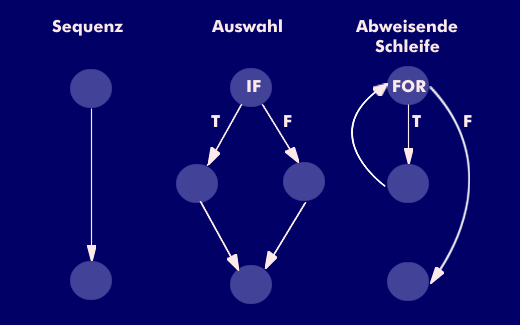

Was sind Metriken?
Standardmaße um zu determinieren ob Software eine gewisse
Eigenschaft besitzt oder nicht
Weshalb?
Früher: LOC als das Maß der Dinge
Durch Aufkommen und Verbreitung der Objektorientierung nicht mehr aussagekräftig genug
Zeit für
objektorientierte Metriken
OO Metriken
- Größe
- Komplexität
- Kopplung und Kohäsion
- Vollständigkeit
- Ähnlichkeit zwischen Klassen
Weitere Gründe für die Entwicklung von OO- Metriken:
objektorientierter Code unterscheidet sich durch
- Encapsulation
- Datenabstraktion
- Polymorphismus
- Vererbung
Führt zu
"Dezentralisierung" von Code, eine Zeile Code kann häufiger verwendet werden und erfüllt mehrere Funktionen
⇛ Alternative Metriken werden benötigt
Auch als zyklomatische Komplexität bekannt
Per Definition:
Anzahl linear unabhängiger Pfade auf dem Kontrollflussgraph
Stellt gleichzeitig auch die obere Grenze für die Anzahl an minimalen Testfällen um eine vollständige Zweigüberdeckung zu erhalten
Berechnung durch Anzahl der Binärzweige:
- Komplexitätsmaß: M = b+1 (M = b+p bei mehreren Graphen)
- B = Anzahl der Binärverzweigungen
- P = Anzahl an Kontrollflussgraphen
Berechnung durch Anzahl der Knoten und Kanten:
- Es gilt: M = e-n+2p
- e = Anzahl der Kanten
- n = Anzahl der Knoten
- p = Anzahl der Zusammenhangskomponenten

- Sequenz: M = 1-2+2*1 = 1
- Auswahl: M = 4-4+2*1 = 2
- Schleife: M = 3-3+2*1 = 2
- p = Anzahl der Zusammenhangskomponenten
Interpretation und Kritik:
- Komplexität eines Teilprogrammes sollte nicht > 10 sein
- Umstritten, da nur Anweisungen wie if die Komplexität erhöhen
- Dadurch kann nur eine Aussage über den Testaufwand getroffen werden
CBO - Coupling between objects
- Metrik zur Bestimmung der Kopplung zwischen Objekten
- Berücksichtigt die Anzahl der Klassen, welche mit dem Objekt gekoppelt sind, nicht die
Häufigkeit der Verwendung
- Berücksichtigt die Vererbungshierarchie
- Dient zur Feststellung der Test- und Wartbarkeit
- Analyse auf Modul/Package- Ebene,
da hier das Ergebnis besoders relevant ist
- Ermittlung des Wertes unter Berücksichtigung der Gesamtzahl an Klassen und gekoppelten Klassen je Klasse
Interpretation der gewonnenen Werte
- 0 = keine Verbindung zu anderen Klassen
- niedrige Werte (<=5) = optimal
⇛ lose Kopplung der Klasse zu den Anderen
- hohe Werte (>8) = starke Kopplung
⇛ schwere Wart- und Testbarkeit da für jeden Testcase eine hohe Anzahl an Abhängigkeiten
Vorteile:
- Sprachunabhängig, generell für OO - Konzepte gültig
- Einfache Offenlegung problematischer Kopplung in einem Package
Nachteile
- Wie werden Thresholds definiert?
- Worin liegt die Güte?
- Verschiedene Vorgehensweisen
möglich